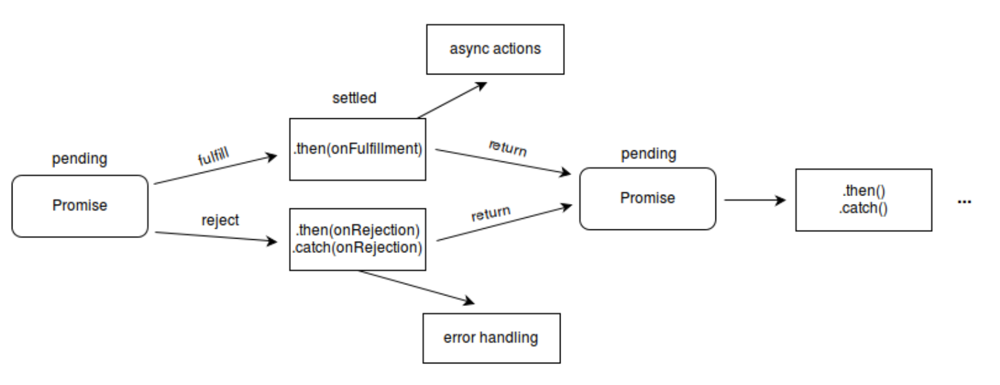

1. promise

promise语法
1
2
3
4
5
6
7
8const p1 = new Promise((reslove,reject)=>{
console.log(2);
reslove(1)
}).then((data)=>{
console.log(3);
}).catch((data)=>{
console.log(3);
})
2. 三种状态
pending： 在过程中还没有结果
fulfilled: 已经解决了
rejected:被拒绝了，失败了
3. 状态的变化和表现
（1）状态一旦生成，不会因为后面再调用的resolve或者reject而改变
（2）不执行resolve或者reject就一直是pending状态，pending不会触发then和catch
(3) resolve 方法的参数是then中回调函数的参数
reject 方法中的参数是catch中的参数
(4) Promise.resolve()返回fulfilled状态的promise
Promise.rejetc()返回rejected状态的promise
(5) then 和 catch 只要不报错，返回的都是一个fullfilled状态的promise
2. promise.all
2.1 promise.all基本使用
promise.all 基本语法
1
2
3
4
5Promise.all([p1, p2]).then((result) => {
console.log(result)
}).catch((error) => {
console.log(error)
})promise特点
- Promise.all可以将多个Promise实例包装成一个新的Promise实例
- 当参数中的所有promise全部成功时返回成功结果，且结果是所有promise返回成功结果的数组
- 只要数组中有一个promise失败，则返回失败，结果是第一个失败的promise的值
使用场景： 如果有一个接口需要等待，页面上两个接口都返回数据才调用，有一个失败就不调用的情况
2.2 手写promise.all
思路：
1、接收一个 Promise 实例的数组或具有 Iterator 接口的对象，
2、遍历每一个数组元素，如果元素不是 Promise 对象，则使用 Promise.resolve 转成 Promise 对象
3、如果全部成功，状态变为 resolved，返回值将组成一个数组传给回调
4、只要有一个失败，状态就变为 rejected，返回值将直接传递给回调all()
的返回值也是新的 Promise 对象
1 | function promiseAll(promises) { |
3. promise.race
3.1 基本使用
基本语法
1
2
3
4
5Promise.race([p1, p2]).then((result) => {
console.log(result)
}).catch((error) => {
console.log(error) // 打开的是 'failed'
})特点：Promise.race([p1, p2, p3])里面哪个结果获得的快，就返回那个结果，不管结果本身是成功状态还是失败状态
3.2 手写promise.race
思路：
返回一个创建的promise，在该promise的then中遍历每一个数组元素，并且当
某个元素有返回，直接执行创建的promise的resolve/reject
1 | function promiseRace(promises) { |
4. async await
4.1 基本语法
1 | async function async1(){ |
4.2 特点
await关键字只能在async函数中使用
await 后面跟着的应该是一个promise对象
await 表示在这里等待promise返回结果了，再继续执行。
await 相当于promise的then情况，所以promise返回catch没办法处理，所以捕获问题需要配合trycatch使用